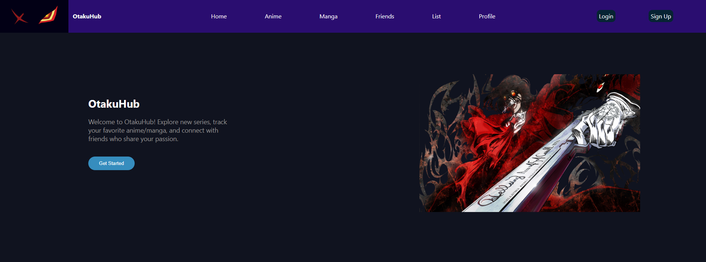
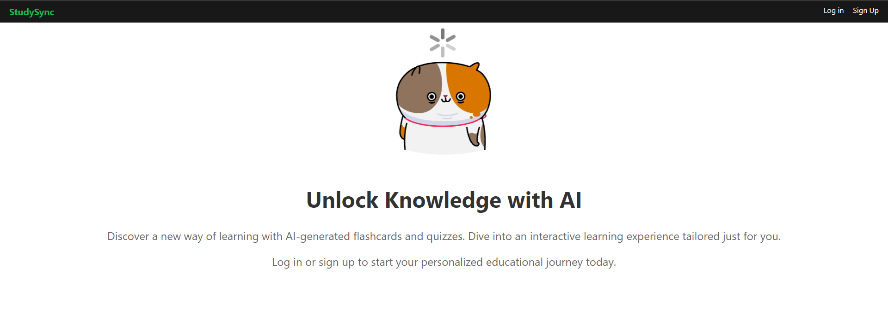

Personal Project
HTML/CSS
Javascript
ReactJS
NodeJS/ExpressJS
AWS
OtakuHub is a web application designed for anime and manga enthusiasts to easily track, rate, and engage with their favorite series. Users can connect with friends, share their watchlists, and engage in discussions, creating a vibrant community. Additionally, OtakuHub provides personalized recommendations based on users' preferences, enhancing their anime and manga viewing experience.

Capstone Project
HTML/CSS
Javascript
ReactJS
Firebase
StudySync is a comprehensive, user-centric digital study tool designed for enhanced interactive learning. Users can craft, customize, and categorize flashcards for efficient knowledge retention, bolstered by features like prioritization, comments, and upvote/downvote mechanisms. Moreover, it fosters a collaborative learning ecosystem where users can connect with peers, exchange study materials, challenge each other through quizzes, and track their collaborative progress. StudySync offers a secure, seamless experience, marrying the best of individualized study and social learning.
Capstone Project
Dungeon Hunting RPG is an immersive Discord bot application that brings the excitement of dungeon exploration and monster battles to the platform. Players can engage in thrilling adventures, face formidable enemies, and track their progress within the adventure guild, all through simple commands and intuitive interaction with the bot. With features like setting up enemy encounters, exploring dungeons, and monitoring health bars, Dungeon Hunting RPG offers a rich and dynamic gaming experience within the Discord environment.